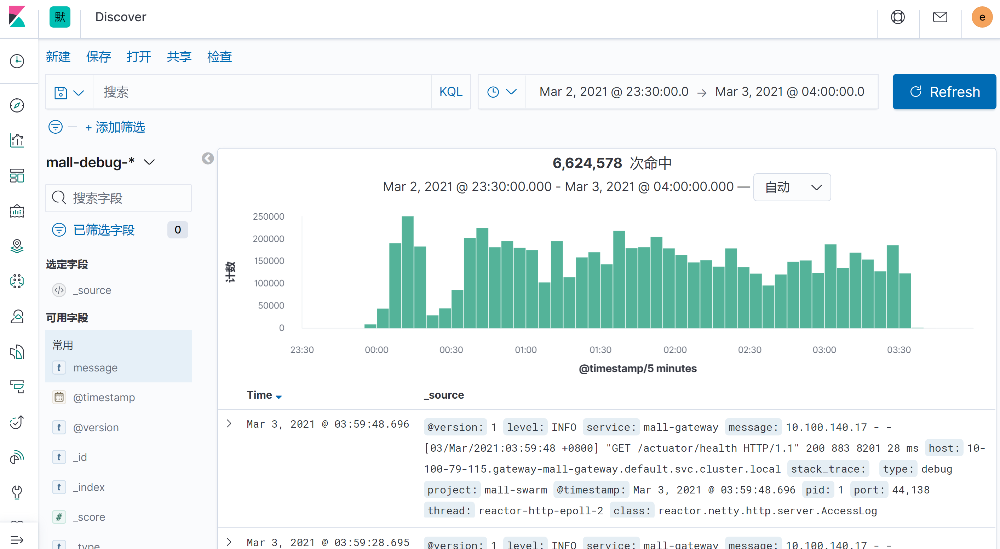
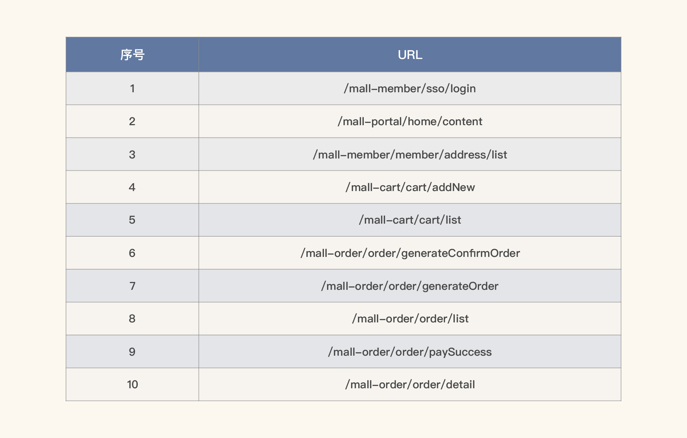
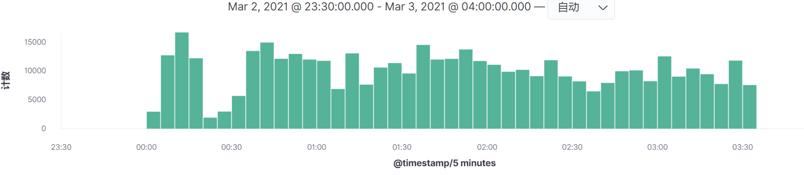
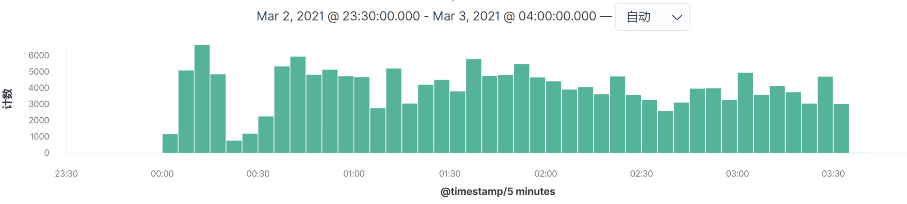
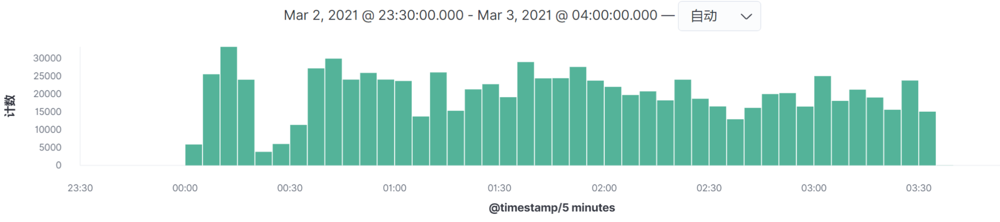
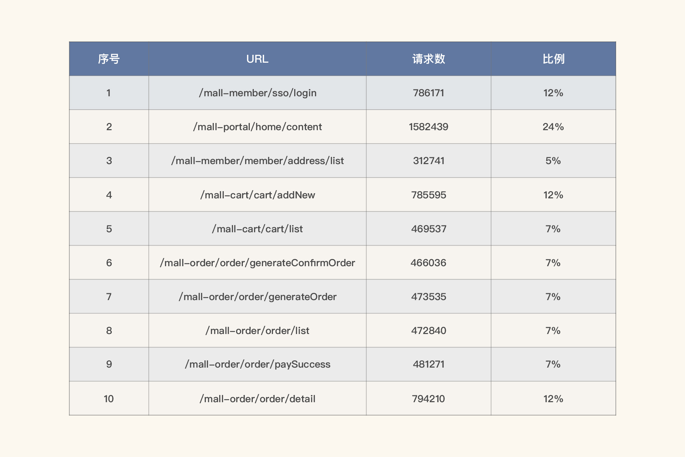
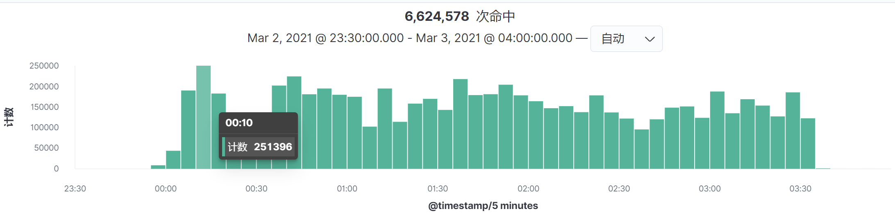
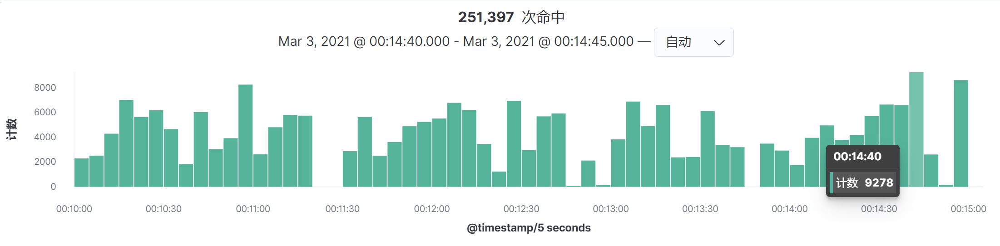
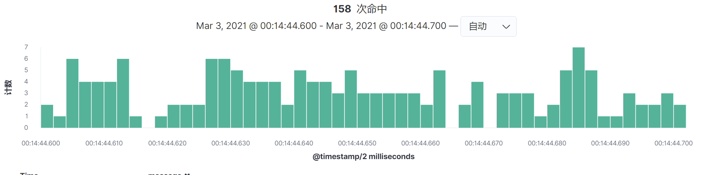
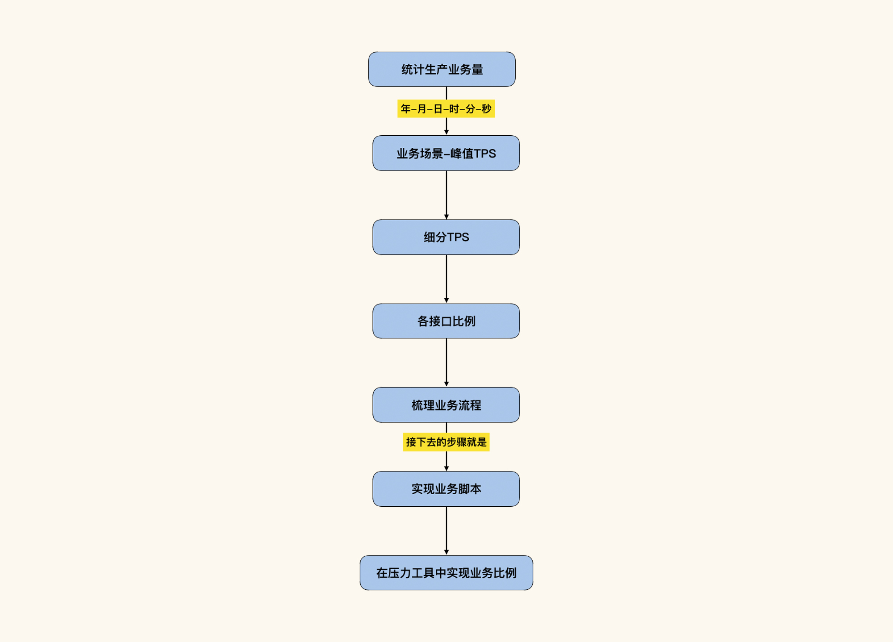

- 00 开篇词 打破四大认知局限，进阶高级性能工程师.md
- 01 性能工程：为什么很多性能测试人员无法对性能结果负责？.md
- 02 关键概念：性能指标和场景的确定.md
- 03 核心分析逻辑：所有的性能分析，靠这七步都能搞定.md
- 04 如何构建性能分析决策树和查找瓶颈证据链？.md
- 05 性能方案：你的方案是否还停留在形式上？.md
- 06 如何抽取出符合真实业务场景的业务模型？.md
- 07 性能场景的数据到底应该做成什么样子？.md
- 08 并发、在线和TPS到底是什么关系？.md
- 09 如何设计全局和定向监控策略？.md
- 10 设计基准场景需要注意哪些关键点？.md
- 11 打开首页之一：一个案例，带你搞懂基础硬件设施的性能问题.md
- 12 打开首页之二：如何平衡利用硬件资源？.md
- 13 用户登录：怎么判断线程中的Block原因？.md
- 14 用户信息查询：如何解决网络软中断瓶颈问题？.md
- 15 查询商品：资源不足有哪些性能表现？.md
- 16 商品加入购物车：SQL优化和压力工具中的参数分析.md
- 17 查询购物车：为什么铺底参数一定要符合真实业务特性？.md
- 18 购物车信息确定订单：为什么动态参数化逻辑非常重要？.md
- 19 生成订单信息之一：应用JDBC池优化和内存溢出分析.md
- 20 生成订单信息之二：业务逻辑复杂，怎么做性能优化？.md
- 21 支付前查询订单列表：如何分析优化一个固定的技术组件？.md
- 22 支付订单信息：如何高效解决for循环产生的内存溢出？.md
- 23 决定容量场景成败的关键因素有哪些？.md
- 24 容量场景之一：索引优化和Kubernetes资源分配不均衡怎么办？.md
- 25 容量场景之二：缓存对性能会有什么样的影响？.md
- 26 稳定性场景之一：怎样搞定业务积累量产生的瓶颈问题？.md
- 27 稳定性场景之二：怎样搞定磁盘不足产生的瓶颈问题？.md
- 28 如何确定异常场景的范围和设计逻辑？.md
- 29 异常场景：如何模拟不同组件层级的异常？.md
- 30 如何确定生产系统配置？.md
- 31 怎么写出有价值的性能报告？.md
- 我们这个课程的系统是怎么搭建起来的？.md
- 结束语 做真正的性能项目.md
06 如何抽取出符合真实业务场景的业务模型？
你好，我是高楼。
我们知道，业务模型一直是性能项目中很重要的环节。在容量场景中，每个业务比例都要符合真实业务场景的比例。如果不符合，那场景的执行结果也就没有意义了。
但是，我们经常可以看到，很多性能从业人员因为对业务模型的抽取过程不够了解，或者是拿不到具体的数据，导致业务模型和生产业务场景不匹配，进而整个性能项目都变得毫无意义。
也有大量的项目，并没有拿历史业务数据做统计，直接非常笼统地拍脑袋，给出相应的业务模型，这样显然也是不合理的。可是，这种情况在金融、互联网等行业中十分常见。
当然，也有人为了让业务模型和真实业务场景尽可能匹配，会直接拿生产环境的请求进行回放。可是，即便我们拿生产环境的请求录制回放了，也不能保证业务模型和未来的业务场景一致，因为未来的业务场景会随着业务推广而变化。
所以说，我们在做场景时首先要明白，当前的场景是要模拟历史业务场景，还是未来业务场景。
如果是未来的业务场景，那就要靠业务团队给出评估，而非性能团队。不过，在当前的性能市场中，经常有企业要求性能团队给出业务模型，这显然是不理智的。首先，性能团队的业务背景不如业务团队更熟悉；其次，他们对业务市场的把握也不够专业。
其实，在真实的工作场景中，业务模型的确认从来都不应该由一个团队来做，而应该由业务团队、架构团队、开发团队、运维团队和性能团队共同确定，并最终由项目的最上层领导确认。
如果一个系统有历史业务数据，那我们获得业务模型就有背景数据了。这时候，性能团队应该从历史业务数据中抽取出各场景的业务模型。如果系统没有历史数据，那就应该像对未来业务模型评估一样，需要各团队协作给出当前的业务模型。
正是基于我们前面提到的各种问题，经常有性能从业人员问我，我们应该如何从历史业务数据中抽取出业务模型？可能你也有这样的困惑，下面我们就来详细地说一说，同时我会借助实例为你展示一个具体的过程。
大体上来说，抽取真实业务模型有两个大步骤：
- 抽取生产业务日志。这一步可以通过很多种手段来实现。这节课我给你展示两种比较常见的手段。一种是当没有日志统计系统时，使用awk命令来抽取；另一种是使用ELFK来抽取。
- 梳理业务逻辑。
对于第一步而言，我们抽取生产业务日志是为了得到对应的业务比例。下面我们先来看看怎么用命令抽取生产业务日志。
使用命令抽取生产业务日志
这里我以少量的Nginx日志举例。在Nginx中，日志格式通常如下所示：
120.220.184.157 - - [26/Oct/2020:14:13:05 +0800] "GET /shopping/static/skin/green/green.css HTTP/1.1" 200 4448 0.004 0.004 "https://www.xxx.cn/shopping/" "Mozilla/5.0 (Windows NT 6.1; WOW64) AppleWebKit/537.36 (KHTML, like Gecko) Chrome/45.0.2454.101 Safari/537.36" "124.127.161.254"
120.220.184.203 - - [26/Oct/2020:14:13:05 +0800] "GET /shopping/static/js/manifest.0e5e4fd8f66f2b389f6a.js HTTP/1.1" 200 2019 0.003 0.003 "https://www.xxx.cn/shopping/" "Mozilla/5.0 (Windows NT 6.1; WOW64) AppleWebKit/537.36 (KHTML, like Gecko) Chrome/45.0.2454.101 Safari/537.36" "124.127.161.254"
120.220.184.149 - - [26/Oct/2020:14:13:05 +0800] "GET /shopping/static/js/app.cadc2ee9c15a5c1b9eb4.js HTTP/1.1" 200 138296 0.100 0.005 "https://www.xxx.cn/shopping/" "Mozilla/5.0 (Windows NT 6.1; WOW64) AppleWebKit/537.36 (KHTML, like Gecko) Chrome/45.0.2454.101 Safari/537.36" "124.127.161.254"
以上数据内容及顺序可以在Nginx配置文件中配置。我们的目标是抽取其中某个时间内的每秒的访问量，所以，我们只需要把对应的时间取出来统计一下即可，命令如下：
cat 20201026141300.nginx.log|awk '{print $4}' |uniq -c
我们得出下面的结果：
5 [26/Oct/2020:14:13:05
3 [26/Oct/2020:14:13:06
14 [26/Oct/2020:14:13:07
4 [26/Oct/2020:14:13:08
1 [26/Oct/2020:14:13:09
2 [26/Oct/2020:14:13:10
1 [26/Oct/2020:14:13:12
2 [26/Oct/2020:14:13:20
14 [26/Oct/2020:14:13:23
1 [26/Oct/2020:14:13:24
2 [26/Oct/2020:14:13:26
2 [26/Oct/2020:14:13:29
9 [26/Oct/2020:14:13:30
9 [26/Oct/2020:14:13:31
1 [26/Oct/2020:14:13:32
13 [26/Oct/2020:14:13:35
2 [26/Oct/2020:14:13:37
20 [26/Oct/2020:14:13:38
2 [26/Oct/2020:14:13:39
33 [26/Oct/2020:14:13:44
17 [26/Oct/2020:14:13:46
5 [26/Oct/2020:14:13:47
23 [26/Oct/2020:14:13:48
29 [26/Oct/2020:14:13:49
4 [26/Oct/2020:14:13:50
29 [26/Oct/2020:14:13:51
26 [26/Oct/2020:14:13:52
22 [26/Oct/2020:14:13:53
57 [26/Oct/2020:14:13:59
1 [26/Oct/2020:14:14:02
这样就可以知道哪段时间里的访问量最高了。这里我们其实可以灵活运用，如果你只想取到分钟、某小时、某天都可以做相应的命令调整。例如，我们想取到分钟级，只要加上相应的截取命令就可以了，如下所示：
cat 20201026141300.nginx.log|awk '{print $4}' |cut -c 2-18|uniq -c
对应的结果如下：
352 26/Oct/2020:14:13
1 26/Oct/2020:14:14
上述结果的意思是，在我这个日志中有两分钟内的数据，第一分钟中有352个请求，第二分钟中只有一个请求。
如果你想请求URL来做统计，那么就可以修改命令：
cat 20201026141300.nginx.log|awk '{print $7}' |cut -c 1-50|uniq -c
结果如下：
................
1 /shopping/checkLogin
1 /shopping/home/floor
1 /sso/loginOut
1 /shopping/home/navigation
6 /shopping/home/floor
2 /shopping/home/floorGoods
1 /shopping/home/sysConfig
4 /shopping/home/floorGoods
1 /shopping/home/floor
1 /sso/loginOut
................
此时我们取日志中的第七个数据，然后截取统计。这样我们就可以知道，每个时间段内每个请求的数量，也就可以得到相应的业务比例了。
上面这些命令你只要灵活运用，处理数据量不太大的文件是没什么问题的。
使用ELFK抽取生产业务日志
如果你想使用ELFK抽取日志，具体可以按如下步骤来做：
- 安装ELFK。这里的ELFK是指ElasticSearch/Logstash/FileBeat/Kibana的组合。具体安装方法可以搜索一下，网上的教程多如牛毛。
- 配置好ELFK后，在Kibana的Discover界面就能看到收集的信息。注意，一条日志对应的就是一次命中。
- 通过选择时间段就可以看到有多少请求在这个时间段内。
- 要想得到接口请求的百分比，可以点击“Dashboard”中的“可视化”，创建一个Lens可视化面板，选择相应的URL字段就可以看到各个接口的百分比了。
总体来说，用ELFK抽取生产日志得到业务模型，可以分为两个阶段。
第一个阶段是统计大时间段的日志信息，然后逐渐缩小范围，比如说按年、月、天、时、分的顺序。这一步是为了将系统的峰值请求覆盖住。
第二个阶段是细化所选择的时间段。虽然我们在第一个阶段已经把时间段细化到分了，但由于我们的场景得到的结果是按秒来统计TPS的，所以我们要再细化到生产环境的TPS级别。这样就可以把生产的业务场景和测试中的场景进行对比了。
下面我通过实例给你详细讲一讲这两个阶段。
第一个阶段：统计大时间段的日志。
在查看ELFK中的数据时，建议你尽可能选择覆盖全部业务场景的时间段。比如说，我们要选择峰值时间段，一开始要选择时间段的范围设置大一些，这样才不会漏掉数据。然后再通过柱状图的高低做范围缩小。
通过这样的操作就可以知道生产环境中各业务接口的总体百分比了。
其实，实时将相应的日志输出到ELFK中，是很多企业对日志处理的常用方法。这样不仅可以实现对日志的灵活查找，也可以实现对日志的长时间存储，并且也可以做更多的后续处理，生成可视化图形之类的。在这里，我们来实际操作一下。

如上图所示，我们在Kibana中截取了一段时间的日志，这段日志总共有6,624,578次请求。你可以用Kibana直接生成下面这样的表格视图：

这样你就可以知道哪些请求比较靠前。为什么我没有显示总数呢？因为在一段时间之内的每个请求，我们要生成相应的柱状图，如果看到它们的集中时间段是相同的，那就做一个场景即可；如果不同，则要做多个场景。下面我们来搜索一下。
/mall-member/sso/login-

/mall-portal/home/content

- /mall-member/member/address/list

其他接口的图类似，我就不一一列了。
看图上的数据时间点，在我这个例子中，所有的请求量级的时间点都是相同的，所以我们只需要做一个场景即可全部覆盖。请你务必要注意，在你的实际项目中，并不见得会是这样。如果出现某个请求的高并发时间点和其他的请求不在同一时间点，就一定要做多个场景来模拟，因为场景中的业务模型会发生变化。
在我这个示例中，我们把数据量也列在表格中，同时求出比例关系，也就是拿某请求的数量除以总请求数，如下所示：

这是在这一个时间段的业务平均比例。
通过第一阶段，我们已经可以知道哪个时间段的请求高了。但是这个时间段范围是5分钟，这对于任何一个系统来说，都算是比较集中的时间段了。但是我们的动作还没有结束，因为我们不仅要知道哪一段的用户操作比较集中，还要知道的是生产上能达到的TPS有多高。所以还需要细化，只有细化了我们才能知道具体生产的TPS。
第二个阶段：细化时间段
通过主面图中的Timestamp，可以看到是时间间隔是5分钟，我们选择最高请求的时间段，点进去。

这样我们就得到时间间隔为5秒的图了：

然后按命中次数来计算TPS，就可以得到如下结果：
\(生产TPS = 9278 \\div 5 = 1,855.6\)
当然了，你还可以再细化，得到毫秒级的图：

通过这种方式，我们就可以得知一个系统在生产环境中的峰值的TPS有多大。1855.6这个值是我们要定的测试环境中总的TPS。如果达不到这个值，那就要接着优化，或者增加硬件资源。
通常情况下，得到总TPS之后，我们要根据测试目标，分三种方式处理这个总TPS，而这三种方式都是以业务目标为前提的。
- 业务无变化，应用版本有小变化（通常只是小的功能变化或修改Bug）：在这种情况下，我们只要将计算出来的TPS做为性能场景总的TPS指标即可。
- 业务无变化，应用版本有大变化（比如说架构变更）：在这种情况下，我们只要将计算出来的TPS做为性能场景总的TPS指标即可。
- 业务有变化，应用版本有大变化：在这种情况下，我们要根据业务估算的增量来做相应的TPS增量计算。如果根据业务变化趋势预估会增加20%，那你就可以在上面计算的总TPS的基础上，再加上对应的20%即可。
梳理业务逻辑
在上面的接口得到业务模型之后，我们就可以根据接口的量级梳理业务逻辑，以便更真实地模拟生产业务场景。其实在上面的步骤中，我们已经按顺序做了排列，你可以看一下前面的表格。
所以在这个示例中，大概有58%的用户会完整地走完流程。为什么是58%呢？因为登录的业务比例是12%，而后面下单比例是7%。所以是：- \( 7\\%\\div12\\% \\approx 58\\% \)
整体流程说明
最后我们来梳理一下整体的流程：

请注意，上面的业务场景在实际的项目业务统计过程中可以有多个。这个思路可以解决任何性能场景和生产场景不一致的问题。
总结
最后，我们再一起回顾下这一讲的重点内容。在业务模型抽取时我们要注意几个关键点：
- 抽取时间：抽取时间一定要能覆盖生产系统的峰值时间点；
- 抽取范围：抽取的范围要足够大，因为在一些场景中，即便不是峰值，但由于某个业务量较大，也会出现资源消耗大的情况；
- 业务比例在场景中的实现：得到业务模型之后，我们在性能场景中一定要配置出对应的业务比例，不能有大的偏差。
只要做到以上几点，性能场景基本上就不会和真实业务场景有大的差异了。
课后作业
学完这节课后，请你认真思考两个问题：
- 为什么性能场景中要模拟出真实业务比例？
- 抽取生产数据并最终得到业务模型的步骤是什么？
欢迎你在留言区与我交流讨论。当然了，你也可以把这节课分享给你身边的朋友，他们的一些想法或许会让你有更大的收获。我们下节课见！
关于课程读者群
点击课程详情页的链接，扫描二维码，就可以加入我们这个课程的读者群哦，希望这里的交流与思维碰撞能帮助你取得更大的进步，期待你的到来～
© 2019 - 2023 Liangliang Lee. Powered by gin and hexo-theme-book.